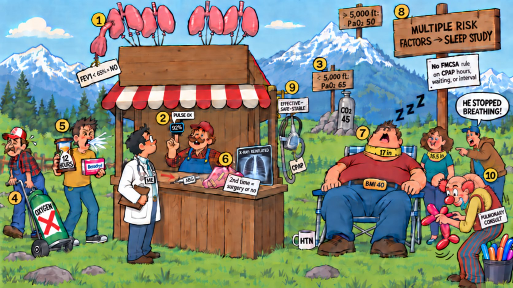

Card 7 of 13 · 49 CFR 391.41(b)(5)
The Sleepy Lung Balloon Stand
Respiratory — spirometry and blood-gas benchmarks, oxygen, sedating antihistamines, pneumothorax, and obstructive sleep apnea.

0:00 / 0:00
Press play — the narrator walks the scene and the spotlight follows to each numbered object. Click any paragraph to jump there. Space play/pause · ←/→ previous/next object · [/] previous/next card.
Not started — press play, then try the questions.
What this card covers
Respiratory — spirometry and blood-gas benchmarks, oxygen, sedating antihistamines, pneumothorax, and obstructive sleep apnea. Standard: 49 CFR 391.41(b)(5).
The hooks to keep
- FEV1 under 65 is a no
- Pulse ox under 92 buys an ABG
- PaO2 65 low, 50 high; CO2 over 45
- Benadryl means twelve hours
- Multiple risk factors → sleep study; CPAP effective, safe, stable
Test yourself
10 questions on this card
Answer each question to see the explanation, its sources, and the cheat-sheet entry.